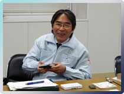

N.O.M：米山さんや崎山さんが携わっている機構設計というセクションは、どのような仕事をするところなのか教えてください。
米山：新しいハードウェアを開発する際は、まず商品企画のデザイナーがコンセプトデザインを作成します。私たちはそのデザインが実際の商品となるように、本体のサイズやディスプレイの性能、各種ボタンの配置や可動部分がスムーズに動くかどうか、そして各パートで使う部品や材料の選定なども行っていきます。３Ｄ−ＣＡＤシステムを使ってハードウェアをプログラム上で立体的に設計する事で、コンセプトどおりの商品化が可能かどうかをデザイナーと検討する。さらに、ここにCPUなどの各種回路が設置された基板を設計するセクションが加わることで、ハードウェア全体の設計図ができあがっていくわけです。
N.O.M：みなさんは機構設計として、いままでどんなプロジェクトに携わっていたのですか？

米山：入社して最初の代表的な仕事はアーケード版の『ドンキーコング』ですね。アメリカ向けのアップライト筐体の機構設計を担当しました。当時はワンソフト・ワンハードの時代です。『ドンキーコング』のゲームデザイナーである宮本と一緒に仕事をしたのを覚えています。そのあとはファミコンにＡＶ端子機能をプラスしたニューファミコンやスーパーファミコンジュニア、それからゲームボーイカラー以降の携帯ゲーム機のプロジェクトにはほとんど参加しています。
崎山：私はニンテンドーＤＳが機構設計として最初に参加したプロジェクトで、そこからゲームボーイミクロ、今回のニンテンドーＤＳLiteと続いています。
N.O.M：デザインどおりに作ってみたら、部品が収まらないという事態はあったりするんですか。
米山：ええ、試作上では何回も出てきます。デザインコンセプトの段階ではデザイナーに自由にやってもらうのですが、そこに中身が加わってくると、やはり商品化するためには改めて仕様を考えることになる。こちらから部品のレイアウトを提案して、おたがいの妥協点をみつけていきます。もちろん、必要な部品を詰め込めばいいというものではなくて、携帯型ゲーム機の場合はユーザーさんが手に持ったときの前後左右の重心バランスも考えながらレイアウトしていくわけです。開発中は基板設計のセクションも巻き込んで、場所の取り合いですよ（笑）。
|